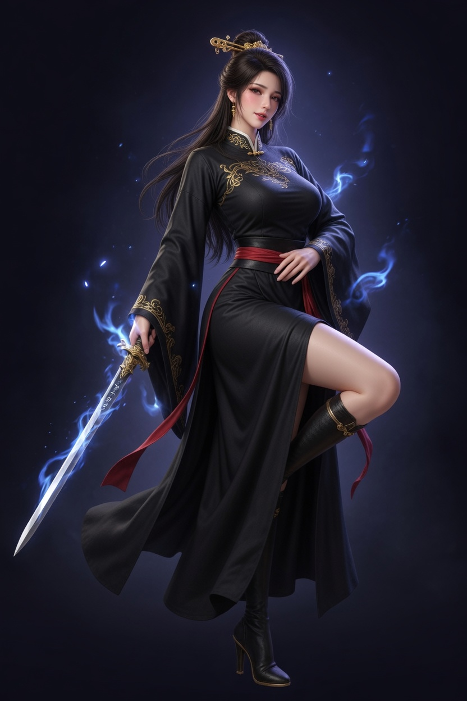
여검객 (Sword Female) - Heroic 12+청운검문 스타일, 푸른 오라, 우아하고 멋진 영웅 포즈
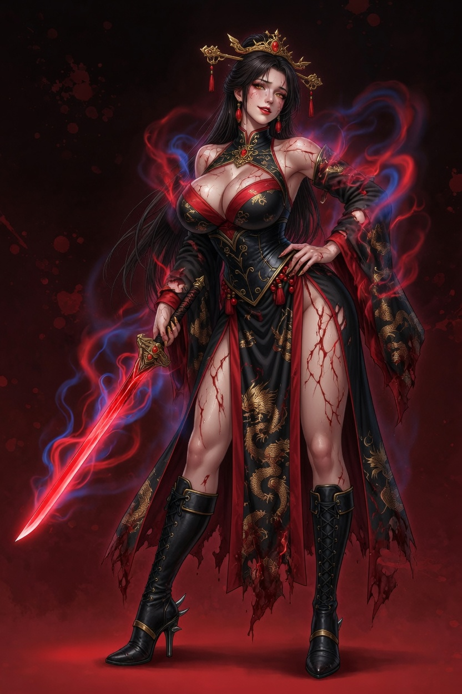
여검객 - Blood Set 12+피로 물든 전투 로브, 붉은 검기, 강인한 여성 무인
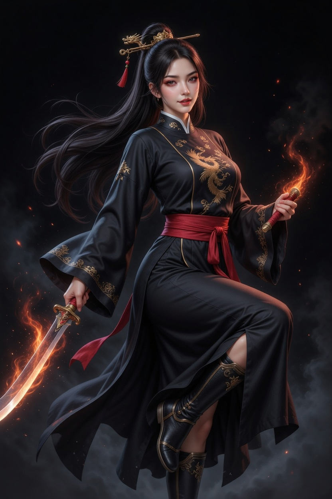
여도객 (Dao Female) - Heroic 12+호풍도문, 곡도 + 붉은 기운, 우아한 도복 스타일
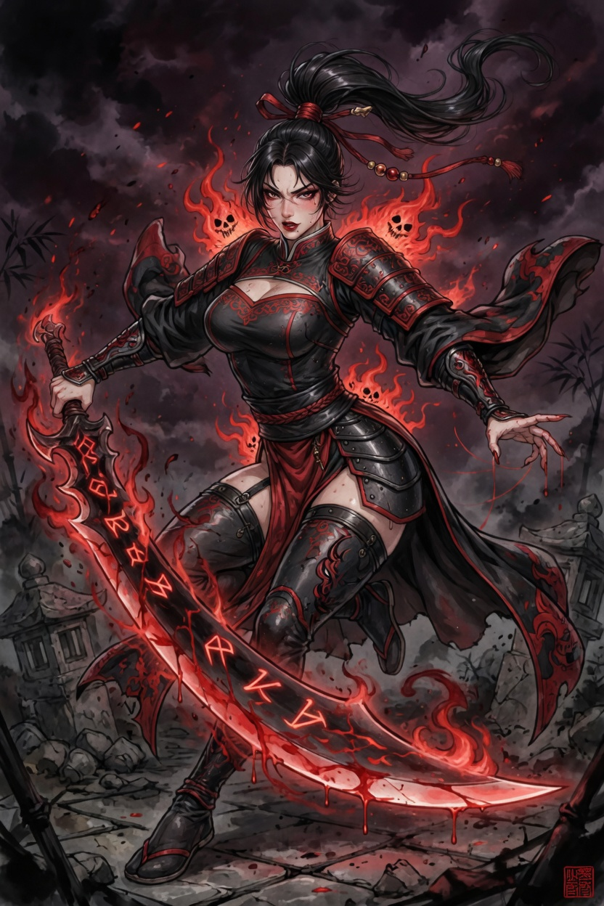
여도객 - Blood Set 12+혈교풍 붉은 의상, 강렬하지만 정돈된 전투복
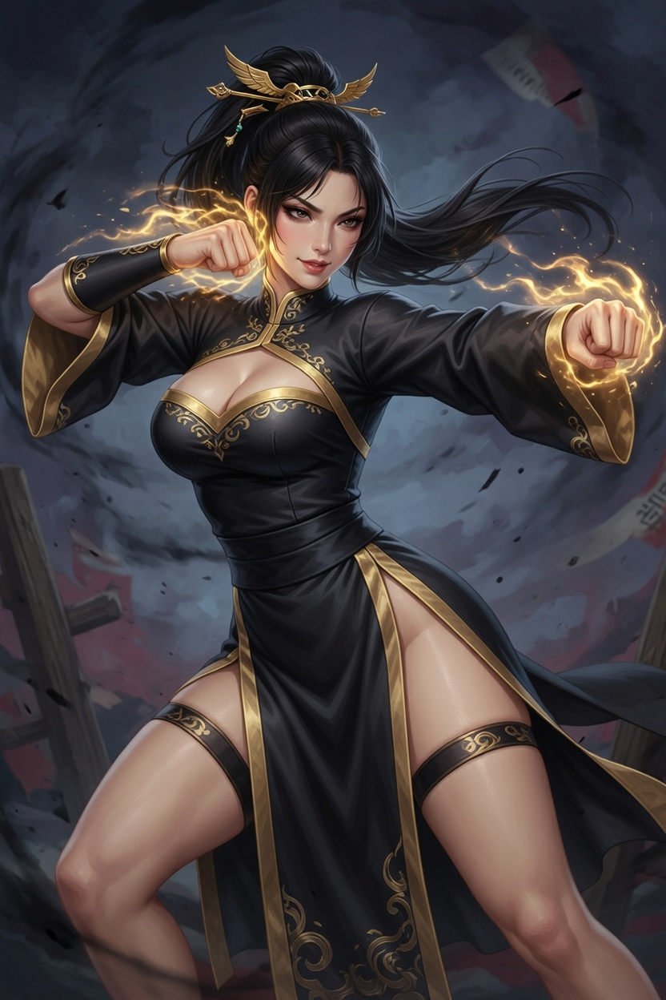
여권사 (Fist Female) - Heroic 12+비룡권문, 주먹 자세, 금빛 오라의 날렵한 무인
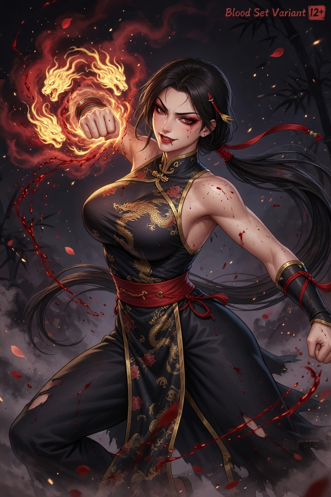
여권사 - Blood Set 12+혈기 어린 주먹, 강인한 전투 스타일
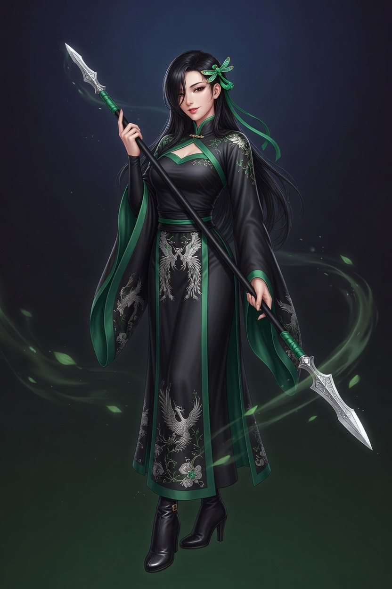
여창객 (Spear Female) - Heroic 12+운령창문, 장창 + 우아하고 강인한 창술가
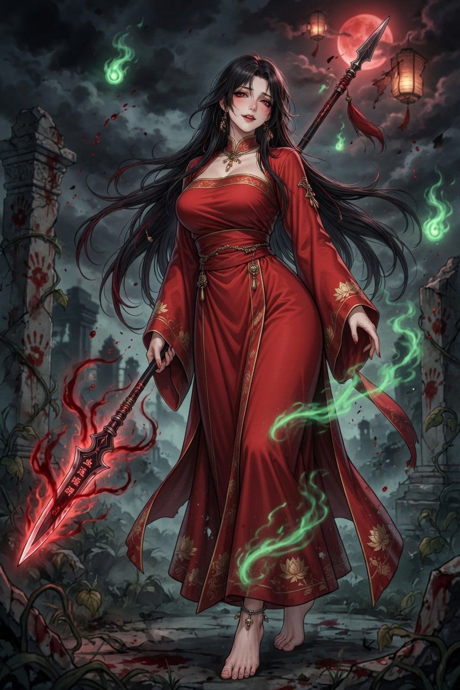
여창객 - Blood Set 12+장창과 함께하는 혈교 버전, 정돈된 전투 의상
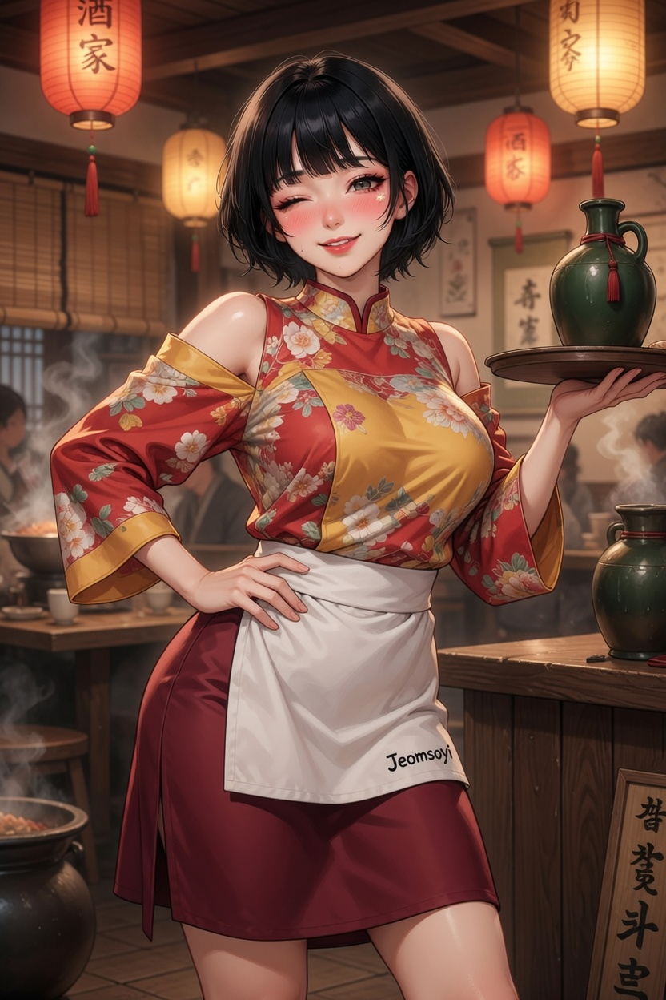
점소이 (Jeomsoyi) - Tavern Girl 12+여관 NPC, 밝고 매력적인 주점 처녀 스타일
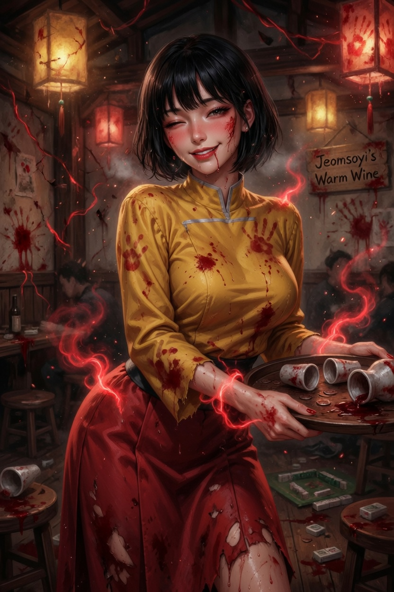
점소이 - Blood Corrupted 12+혈교에 물든 타락 버전, 강인하면서도 매혹적인 분위기
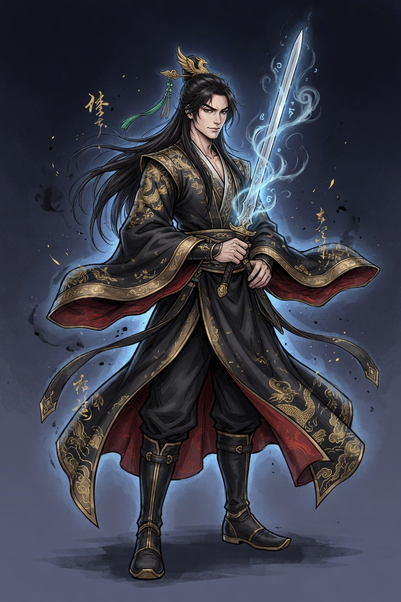
검객 (Sword Male) - Heroic 12+청운검문, 우아한 로브 + 약간의 가슴 노출, 검 들고 자신감 있는 영웅 포즈
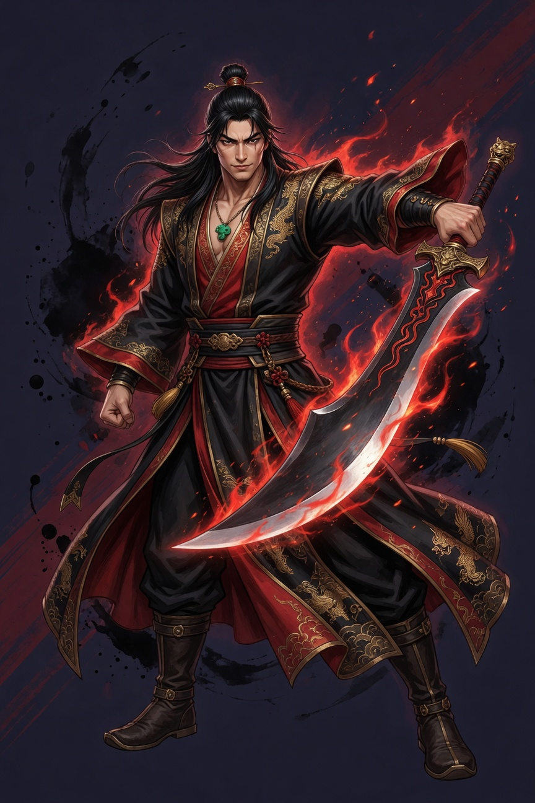
도객 (Dao Male) - Heroic 12+호풍도문, 붉은 기운, 멋지게 입은 도복 스타일
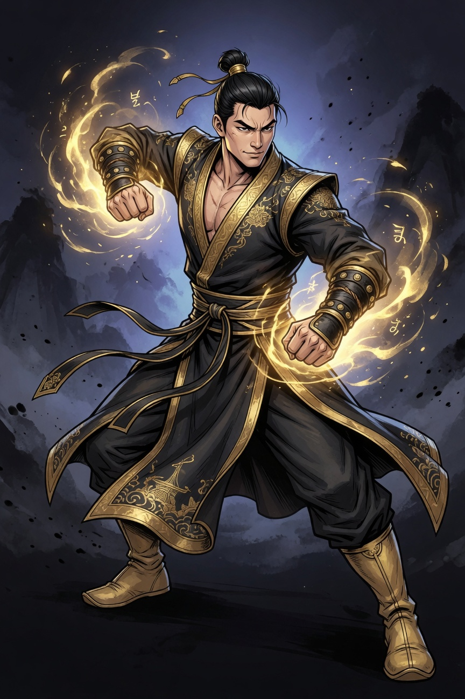
권사 (Fist Male) - Heroic 12+비룡권문, 주먹 자세, 제대로 된 의상 + 금빛 오라
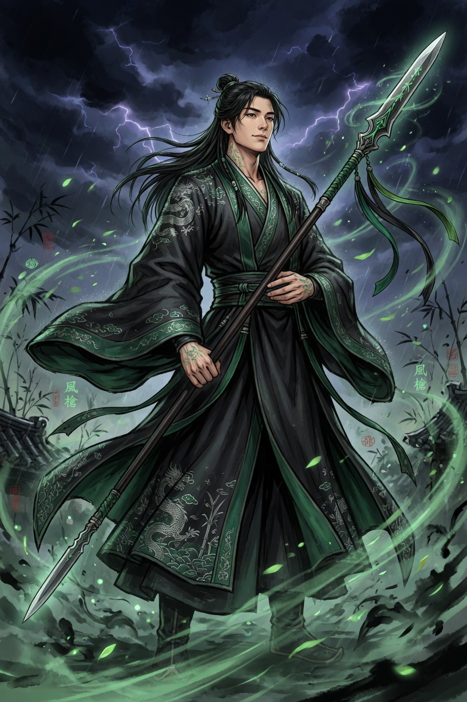
창객 (Spear Male) - Heroic 12+운령창문, 장창 + 멋진 포즈의 무인
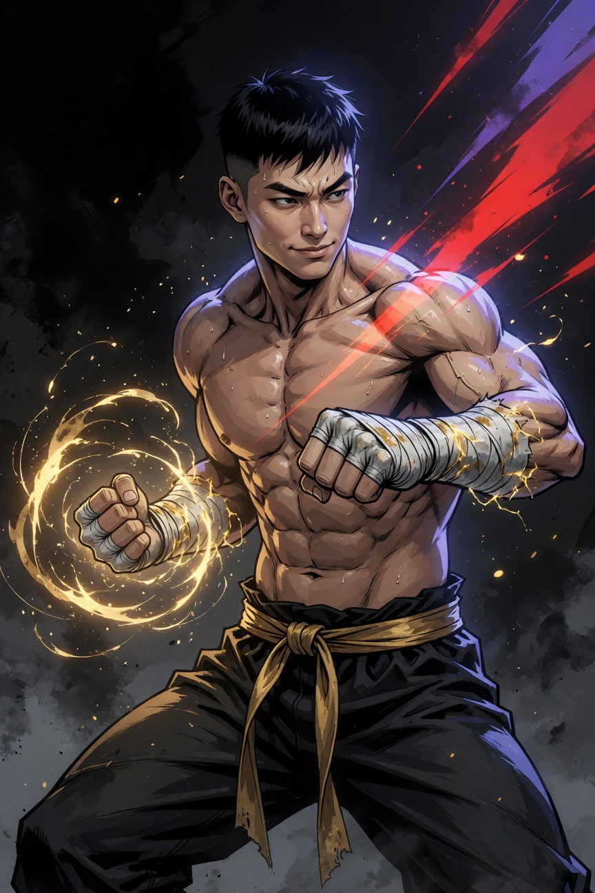
권사 - Bare Upper Body (Heroic)수련/권법 느낌의 상체 노출 버전 (취향에 따라 사용, 여전히 12+ 수준)